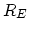
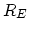
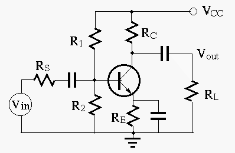

Solution:
Find
 ,
.
Also as
, i.e.,
.
,
.
Also as
, i.e.,
.
,
 ,
.
,
.
Hint This is a design problem with possibly multiple solutions,
i.e., there may be more degrees of freedom than constraining conditions.
One of such conditions is
(typically,
 ) for the DC operating point to be
approximately independent of
) for the DC operating point to be
approximately independent of  (see online notes).
(see online notes).
Start the design process from the desired Q-point, determine  and
, then find desired and finally
and
, then find desired and finally  and
and  .
.

Solution:

Solution:

Solution
Find base current: